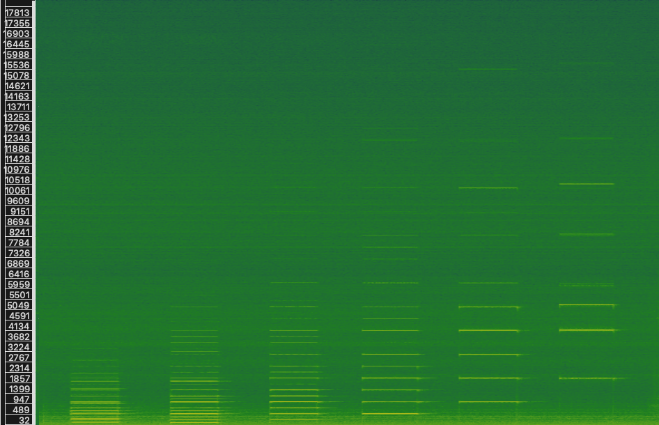
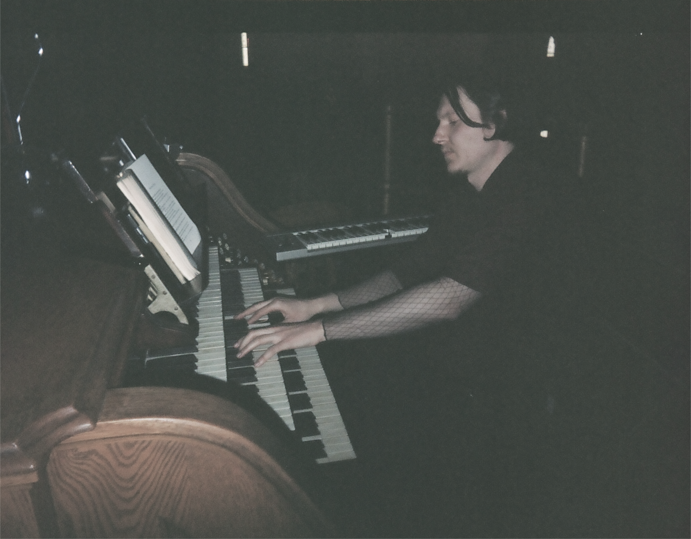
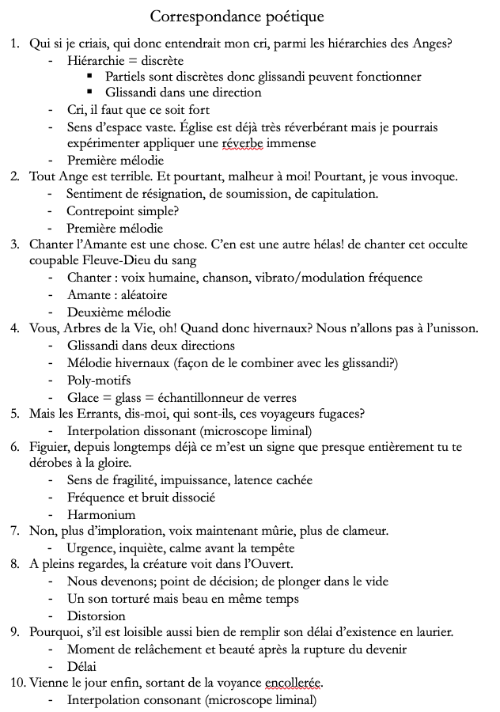
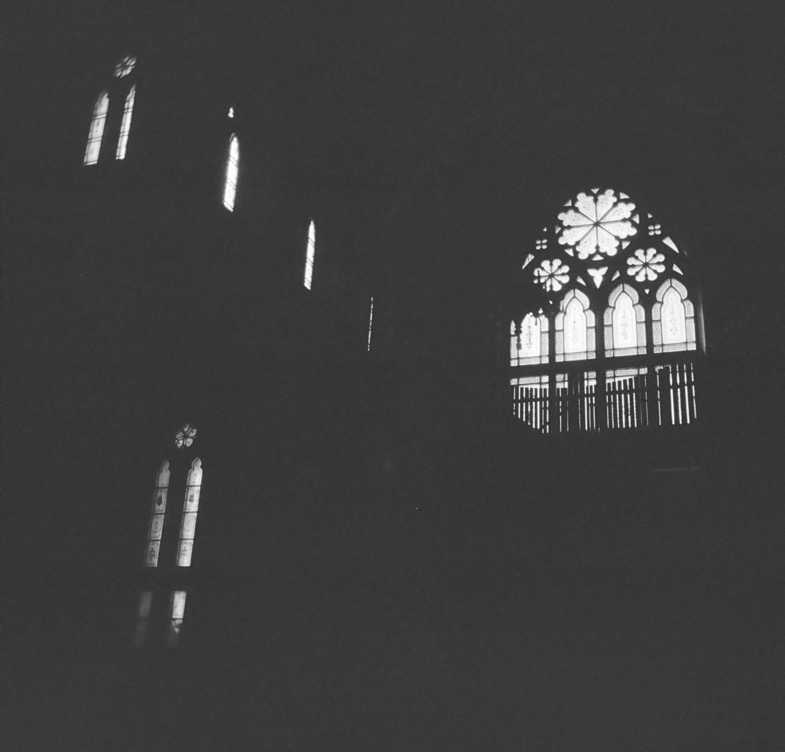
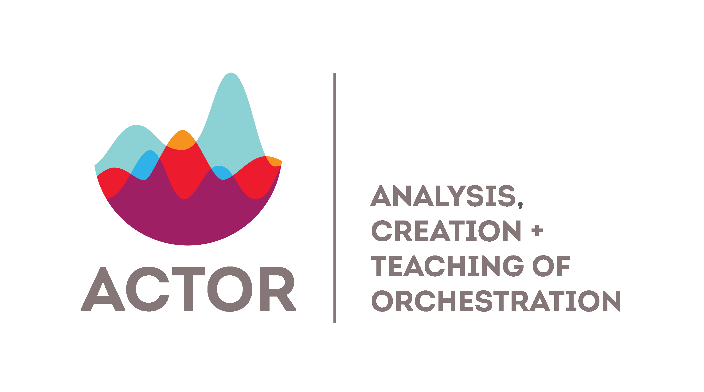
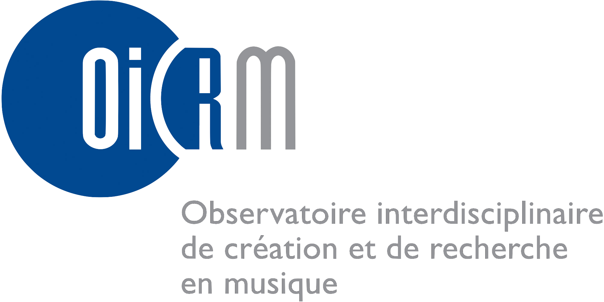
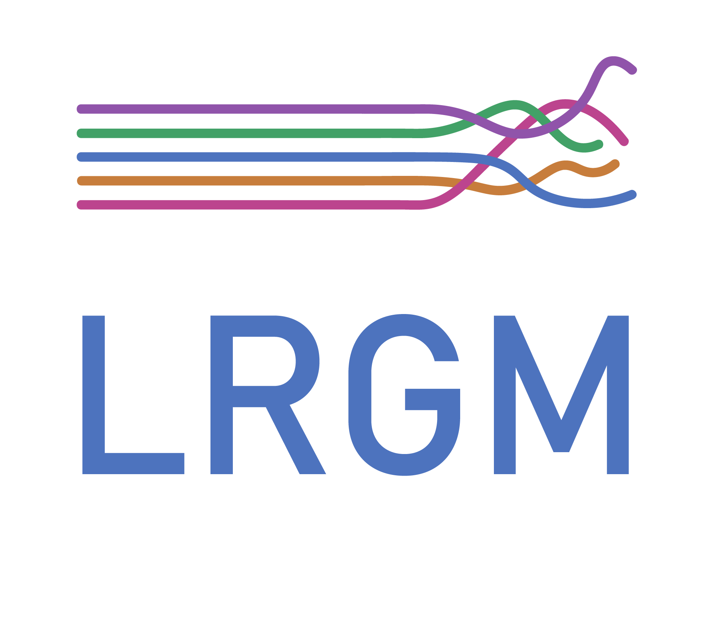
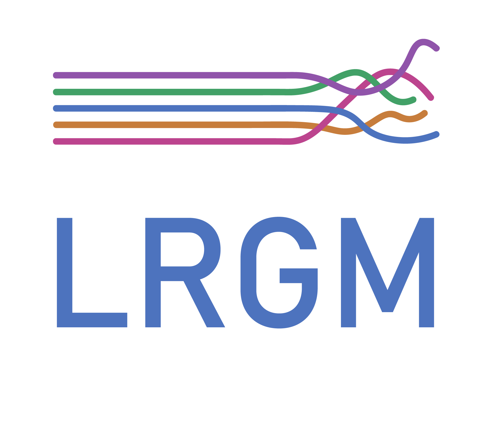
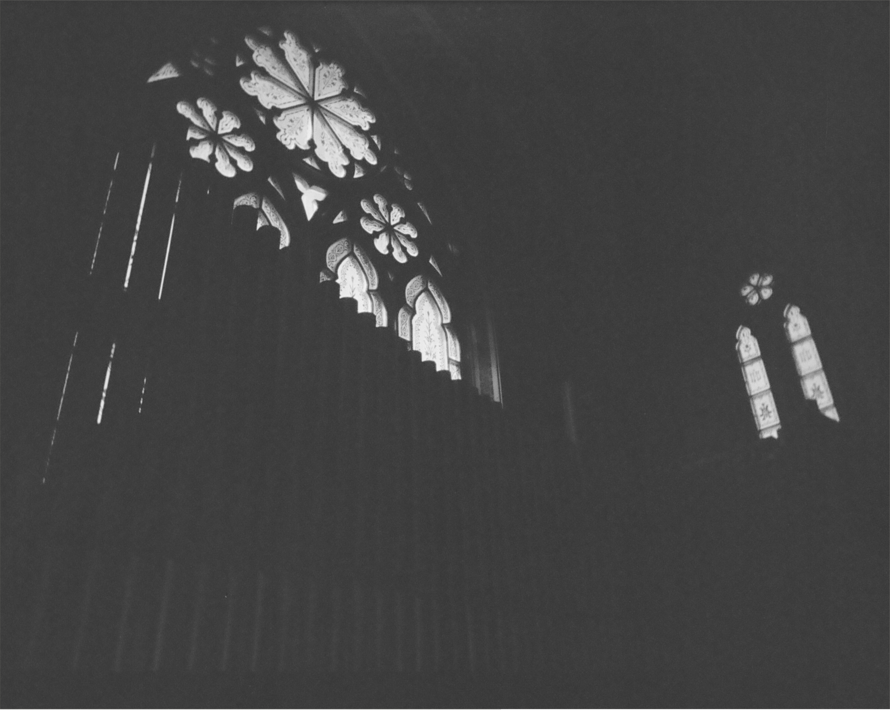

Revisiting
the original
synthesizer: a
composer-performer
perspective on
pipe organ
augmentation
by Kjel Sidloski
Tables of contents
- 2.1 The pipe organ of l'église Saint-Édouard
- 2.2 Posture and approach
- 2.3 OrganLab
- 3.1 Inspirations
- 3.2 Poetic framework
Introduction
1. Hyper-instrument context
2. Constructing a hyper-organ
4. Creative application : Élégies
Conclusion
Bibliography
Introduction
of project
To explore the intersection of modern and ancient technology by interfacing the pipe organ and software, with the aim of weaving new artistic and poetic expressions, rooted in history, with a lens to the future.
1. Hyper-instrument context
- A hyper-instrument is an instrument!
- Attempts to integrate digital technologies with traditional instruments
- Two parts:
- Interface/Input
- Treatment/Output
- Term "hyper-instrument" coined in the late 80s by Tod Machover
What is an augmented or hyper-instrument?
1. Hyper-instrument context
Approaches
- Gesture trackers
- Air pressure sensitivity sensors
- Midi controllers
- Microphones
- Live effects
- Synthesis
- Triggering of sound files
Interface:
Treatment:
1. Hyper-instrument context
Prioritisation
Augmentation and not ameliorisation
Optimising one aspect of an instrument always de-emphasizes others
The choice of approach depends on the selected instrument and the performer or composer's intentions
The choice of approach depends on the selected instrument and the performer or composer's intentions
2. Construction of a hyper-organ
2. Construction of a hyper-organ
2.1 The pipe organ of l'église Saint-Édouard
Constructed in 1913 by Casavant Frères
Their 534e œuvre
Symphonic pipe organ
Electro-pneumatic traction
Three keyboards
53 ranks (More than 3000 pipes!)
No midi
2. Construction of a hyper-organ
2.2 Posture and approach
2. Construction of a hyper-organ
2.2 Posture and approach
A composer/player's interface wishlist
Should integrate with the pipe organ's soundworld
Should extend this soundworld
Should use both convergent and divergent mappings
Should facilitate the navigation of the continuum of acoustic
and synthetic timbral profiles
2. Construction of a hyper-organ
2.2 Posture and approach
My personal solution: hyper-organ modalities
1. Synthesis
2. Real-time effects
3. Bed tracks
2. Construction of a hyper-organ
2.3 OrganLab
- Emulations
- Additive
- Subtractive
- Frequency modulation
- Mutations
- Continuous pitches, like glissandi
- Interpolation between different stops
- Dynamic envelope shaping
- Independent control of harmonic content and noise content
- Explosion and contraction of timbral space
Synthesis engine using Pyo library
Spectral Analysis
Synthesis

2. Construction of a hyper-organ
2. Construction of a hyper-organ

3. Creative application : Élégies
3. Creative application : Élégies
3.1 Inspiration
Hyper-organ etudes
10 Duino Elegies of Rainer Maria Rilke

3. Creative application : Élégies
Extended practice
- Bells
- Keys
- Doors
- Footsteps
References to sonic iconography
Exploring the full space of the church
Theatrical / narrative elements
Conclusion
Space and heritage
A rich avenue

Bibliography
Alary, O. (2020). Vers une musique hantologique instrumentale: Réflexions sur l’écriture technomorphe dans le contexte de la musique instrumentale contemporaine. https://papyrus.bib.umontreal.ca/xmlui/handle/1866/23593
Beilharz, K. A., Jakovich, J., & Ferguson, S. (2006). Hyper-shaku (Border-crossing): Towards the Multi-modal Gesture-controlled Hyper-Instrument. NIME, 352–357.
Comerford, P. (1993). Simulating an Organ with Additive Synthesis. Computer Music Journal, 17(2), 55–65. https://doi.org/10.2307/3680869
Fidom, J. (2011). Ist das Musik⁈ Die Phenomenologie der Orgelimprovisation: The Orgelpark Research Program. Musiktheorie Und Improvisation, Kongressbericht Der IX. Jahrestagung Der Gesellschaft Für Musiktheorie in Mainz, 140–147.
Levenson, T. (1994). Taming the hypercello. The Sciences, 34(4), 15–18.
Machover, T. (1984). Computer music with and without instruments. Contemporary Music Review, 1(1), 203–230.
Machover, T. (1989). Hyper-instruments: Musically intelligent and interactive performance and creativity systems. ICMC Proc., 186–190.
McPherson, A. P., & Kim, Y. E. (2012). The Problem of the Second Performer: Building a Community Around an Augmented Piano. Computer Music Journal, 36(4), 10–27.
Redhead, L. (2014). Sound and Space: Music for Organ and Electronics.
Redhead, L., & Zaldua, A. (2016). The Organ as Live Interface.
Thank you!
If you have any questions:
net@kjel.ca
A special thanks to the OICRM for graciously supporting this project


 

